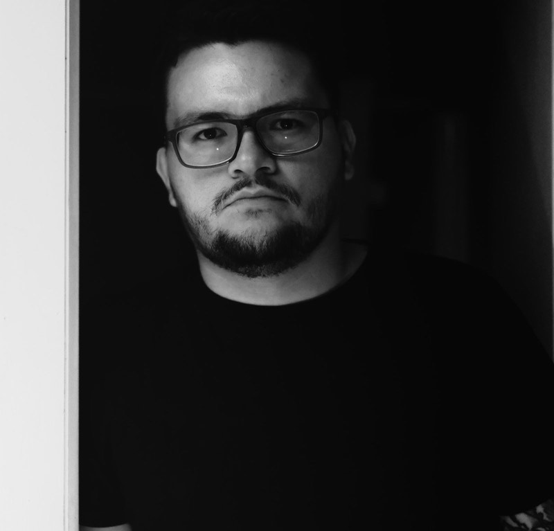

Campañas de alto rendimiento
Planificación, estructura, segmentación, optimización y escalamiento de campañas orientadas a ventas, leads, tráfico, interacción y posicionamiento.
- Google Ads
- Meta Ads
- TikTok Ads
JF.OS / Motor creativo de alto rendimiento
Sistema preparado para transformar atención en autoridad, tráfico en conversión y contenido en crecimiento medible.
Soy Jorge Flechas, estratega digital y trafficker. Construyo campañas de alto rendimiento en Google, TikTok y Meta con estrategia, creatividad persuasiva, lectura de datos y piezas audiovisuales hechas para capturar atención desde el primer segundo.


No hago anuncios. Construyo percepción.
Mi trabajo combina análisis estratégico, psicología de venta, storytelling, hooks visuales y ejecución técnica para transformar ideas en marcas memorables. Donde otros ven tráfico, yo busco autoridad, deseo, retención y conversión real.
Servicios
Desde el mensaje inicial hasta el escalamiento, cada capa está pensada para que la marca conecte con la audiencia correcta y convierta con consistencia.
Planificación, estructura, segmentación, optimización y escalamiento de campañas orientadas a ventas, leads, tráfico, interacción y posicionamiento.
Ángulos de comunicación, hooks, guiones, estructuras persuasivas y mensajes diseñados para detener el scroll y convertir atención en acción.
Edición profesional con ritmo, retención y lenguaje de plataforma para crear piezas audiovisuales dinámicas, cinematográficas y listas para pauta.
Método
La experiencia está diseñada como una producción: diagnóstico, concepto, ejecución, medición y optimización. Cada fase reduce ruido y aumenta precisión.
Analizo oferta, audiencia, fricciones, competidores, métricas y comportamiento del consumidor para encontrar los puntos de mayor oportunidad.
Defino objetivos, estructura, presupuestos, audiencias, embudos, mensajes y eventos clave para que la pauta tenga dirección desde el inicio.
Construyo piezas con hooks, ritmo, prueba social, tensión narrativa y cierres claros, adaptadas a Google, TikTok, Meta y ecommerce.
Leo CTR, CPA, ROAS, retención, frecuencia y calidad de conversión para iterar, apagar ruido, duplicar ganadores y sostener crecimiento.
Creative engine
CapCut, Adobe Premiere Pro, DaVinci Resolve y After Effects al servicio de piezas más claras, rápidas y persuasivas. El objetivo no es solo verse bien: es sostener atención y mover decisiones.
Formas de trabajar
Para marcas que necesitan salir con claridad, estructura y primeras pruebas de mercado.
Para negocios que ya tienen tracción y necesitan mejorar conversión, creatividad y escalamiento.
Para marcas que necesitan piezas audiovisuales de alto impacto adaptadas al lenguaje de cada plataforma.
Certificaciones
Dos plataformas con certificación oficial vigente. Prefiero decirte exactamente en qué estoy certificado antes que llenar la página de sellos.
Certificación oficial de Meta. Facebook, Instagram y WhatsApp: conversión, leads, ecommerce y remarketing.
Certificación oficial de TikTok. Spark Ads, In-Feed y contenido nativo pensado para el lenguaje de la plataforma.
También opero campañas en Google Ads, pero no tengo certificación oficial en esa plataforma y no te la voy a vender como si la tuviera.
Mercados
Meta y TikTok se segmentan por mercado, idioma y comportamiento, no por dónde esté sentado quien las opera. Estos son los mercados de habla hispana que cubro, incluido el hispano de Estados Unidos.
Cómo trabajo
No te entrego un PDF con teoría. Esto es lo que pasa dentro de tu negocio cuando entramos a trabajar.
Reviso oferta, audiencia, competencia y todo lo que ya está corriendo. Antes de tocar un peso, sé dónde se está fugando.
Ángulo, promesa, objeciones y garantía. Si la oferta no está clara, ninguna campaña la salva.
Píxel, API de conversiones, eventos y GA4. Sin esto optimizas a ciegas, y la mitad de las cuentas que audito lo están.
Guion, edición y versiones por ángulo. Las piezas se hacen para pauta, no se reciclan del orgánico.
Estructura, segmentación, presupuestos y pujas. Reviso a diario y muevo lo que hay que mover.
Cada semana: qué funcionó, qué apagué, qué escalo y por qué. En números, no en adjetivos.
Reseñas
Clientes
FAQ
Marcas personales, ecommerce, servicios, negocios locales y proyectos digitales que necesitan convertir mejor su atención en leads, ventas o autoridad.
Trabajo ambas capas. La pauta necesita una base técnica fuerte, pero el rendimiento nace cuando el mensaje, el formato y la edición capturan atención con precisión.
Depende del objetivo: ventas, leads, CPA, ROAS, CTR, calidad de tráfico, retención de video, frecuencia, posicionamiento o crecimiento sostenible del canal.
Sí. Cada plataforma tiene lenguaje, velocidad y patrones de consumo diferentes. Por eso adapto piezas, hooks, duraciones y estructuras para Meta, TikTok, Google y ecommerce.
Siguiente escena
Si tienes una idea, una oferta o una marca lista para crecer, puedo ayudarte a convertirla en una experiencia visual, estratégica y medible.